Homework 03 Solutions

Homework Solutions!
Create a new GitHub repo and git-referenced
Rstudio Project called
“AN588_Zombies_BUlogin”. Within that repo, create a new
.Rmd file called
“BUlogin_OriginalHomeworkCode_03”. Modules
03-08 will each have concepts and example code that will help you
complete this assignment. Don’t forget to add your Peer
Group and instructor as collaborators, and to accept their
invitations to you. Making sure to push both the markdown and knitted
.html files to your repository, do the following:
Load in the dataset “zombies.csv” from my GitHub repo. This data includes the first name, last name, and gender of the entire population of 1000 people who have survived the zombie apocalypse and are now ekeing out an existence somewhere on the East Coast, along with several other variables (height, weight, age, number of years of education, number of zombies they have killed, and college major; see here for info on important post-zombie apocalypse majors).
-
Calculate the population mean and standard deviation for each
quantitative random variable (height, weight, age, number of zombies
killed, and years of education). NOTE: You will not want to use the
built in
var()andsd()commands as these are for samples. - Use {ggplot} to make boxplots of each of these variables by gender.
- Use {ggplot} to make scatterplots of height and weight in relation to age. Do these variables seem to be related? In what way?
- Using histograms and Q-Q plots, check whether the quantitative variables seem to be drawn from a normal distribution. Which seem to be and which do not (hint: not all are drawn from the normal distribution)? For those that are not normal, can you determine from which common distribution they are drawn?
-
Now use the
sample()function to sample ONE subset of 30 zombie survivors (without replacement) from this population and calculate the mean and sample standard deviation for each variable. Also estimate the standard error for each variable, and construct the 95% confidence interval for each mean. Note that for the variables that are not drawn from the normal distribution, you may need to base your estimate of the CIs on slightly different code than for the normal… - Now draw 99 more random samples of 30 zombie apocalypse survivors, and calculate the mean for each variable for each of these samples. Together with the first sample you drew, you now have a set of 100 means for each variable (each based on 30 observations), which constitutes a sampling distribution for each variable. What are the means and standard deviations of this distribution of means for each variable? How do the standard deviations of means compare to the standard errors estimated in [5]? What do these sampling distributions look like (a graph might help here)? Are they normally distributed? What about for those variables that you concluded were not originally drawn from a normal distribution?
Getting Ready
- Load in the dataset “zombies.csv” from my GitHub repo.
The first element of this assignment is loading in the dataset. As always in R, there are many many ways to do this, and we have examples for a few of them in previous modules (particularly Module 05). My preferred way, when I’ve got a clear online location for the dataset (in this case, the GitHub repo link provided above), is to use a {curl} command just because that’s usually the most efficient. As always, though, if you have another way to do it that’s great; the point is to get the data in, doesn’t necessarily matter how for a dataset this small:
> library(curl)
> f <- curl("https://raw.githubusercontent.com/fuzzyatelin/fuzzyatelin.github.io/master/AN588_Fall23/zombies.csv")
> z <- read.csv(f, header = TRUE, sep = ",", stringsAsFactors = FALSE)
> head(z)## id first_name last_name gender height weight zombies_killed
## 1 1 Sarah Little Female 62.88951 132.0872 2
## 2 2 Mark Duncan Male 67.80277 146.3753 5
## 3 3 Brandon Perez Male 72.12908 152.9370 1
## 4 4 Roger Coleman Male 66.78484 129.7418 5
## 5 5 Tammy Powell Female 64.71832 132.4265 4
## 6 6 Anthony Green Male 71.24326 152.5246 1
## years_of_education major age
## 1 1 medicine/nursing 17.64275
## 2 3 criminal justice administration 22.58951
## 3 1 education 21.91276
## 4 6 energy studies 18.19058
## 5 3 logistics 21.10399
## 6 4 energy studies 21.48355Great! Now we can get started characterizing this population of zombie apocalypse survivors, including taking the population mean and standard deviation for each quantitative random variable.
Question 1
- Calculate the population mean and standard deviation for each quantitative random variable (height, weight, age, number of zombies killed, and years of education).
Remember, this is different from sample statistics, as outlined in Module 08, where you can find helpful code for calculating them. In that module, we learned that while the population variance is the sum of squares divided by N (our population size), the sample variance is the sum of squares divided by n-1 (our sample size minus one degree of freedom).
We can use the mean() function to calculate the mean of,
for example, weight:
## [1] 143.9075And let’s use the pop_sd function we created in Module
08 to get the population standard deviation (we also need the
pop_v function to make it work properly):
> pop_v <- function(x) {
+ sum((x - mean(x))^2)/(length(x))
+ }
> pop_sd <- function(x) {
+ sqrt(pop_v(x))
+ }
> pop_sd(z$weight)## [1] 18.39186If you compare it to the sd() function, designed for
samples, you’ll see it’s slightly different due to the
accommodation for the degrees of freedom:
## [1] 18.40106Now, you can just run each of these one by one, simply
plugging in the different variables, but the {tidyverse} has given us
some fancier (and faster) options. You can use the summarise()
function (or verb as the {tidyverse} calls them) to run all of
them in a single pipe:
> library(tidyverse)
> zparams <- z %>%
+ select(height, weight, age, zombies_killed, years_of_education) %>%
+ summarise(across(everything(), list(mean = mean, sd = pop_sd)))
> zparams## height_mean height_sd weight_mean weight_sd age_mean age_sd
## 1 67.6301 4.30797 143.9075 18.39186 20.04696 2.963583
## zombies_killed_mean zombies_killed_sd years_of_education_mean
## 1 2.992 1.747551 2.996
## years_of_education_sd
## 1 1.675704Alternatively (and, I think, much more elegantly), Natalia Kelley came up with this solution, which gives a much nicer and more readable output:
> s <- z %>%
+ select(height, weight, age, zombies_killed, years_of_education)
>
> cbind(mean = apply(s, 2, mean), sd = apply(s, 2, pop_sd))## mean sd
## height 67.63010 4.307970
## weight 143.90748 18.391857
## age 20.04696 2.963583
## zombies_killed 2.99200 1.747551
## years_of_education 2.99600 1.675704Question 2
- Use {ggplot} to make boxplots of each of these variables by gender.
The easiest way to learn how to use {ggplot2} is to just dive in and start experimenting. You can get started by checking out the {tidyverse} webpage for {ggplot2}. There’s a really helpful cheat sheet there that will walk you through basic {ggplot2} grammar.
For a shortcut to drawing these plots, we can also go back and copy code used in Module 06
Now, to build a boxplot, we first need to use the ggplot
function, which will set up our dataset, followed by a geom
call that defines the kind of figure we want to make from that dataset.
Here’s a first try making a boxplot if height by
gender. It’s a very basic plot in which I’m calling in my
dataset (data = z), defining my x- and y-axis variables
(there are named in the aes() or aesthetics command within
ggplot()), and then defining my figure output as a boxplot
using the geom_boxplot() command. Notice that separate
commands that modify the figure outside our ggplot()
command are added using the + character:
The really nice thing about {ggplot2} is the added capabilities to prettify your work. Here’s a small example… see if you can figure out which bit of code makes which change to the graphic (also, notice how I’ve broken up my code to make it clearly readable each time I modify the figure; this kind of syntax might be helpful to use while you’re learning {ggplot2}):
> p <- ggplot(data = z, aes(x = gender, y = height))
>
> p <- p + geom_boxplot(aes(fill = gender))
>
> p <- p + ggtitle("Height by Gender in Survivors")
>
> p <- p + theme_bw()
>
> p
You can easily run all of the required plots by copying and pasting each individual variable name into the chunk, like so (notice I’ve used a more compact syntax here… one line of code per plot; convenient, but also maybe confusing):
> p <- ggplot(data = z, aes(x = gender, y = height)) + geom_boxplot(aes(fill = gender)) +
+ ggtitle("Height by Gender in Survivors") + theme_bw()
> p
> p <- ggplot(data = z, aes(x = gender, y = weight)) + geom_boxplot(aes(fill = gender)) +
+ ggtitle("Weight by Gender in Survivors") + theme_bw()
> p> p <- ggplot(data = z, aes(x = gender, y = zombies_killed)) + geom_boxplot(aes(fill = gender)) +
+ ggtitle("Zombies Killed by Gender in Survivors") + theme_bw()
> p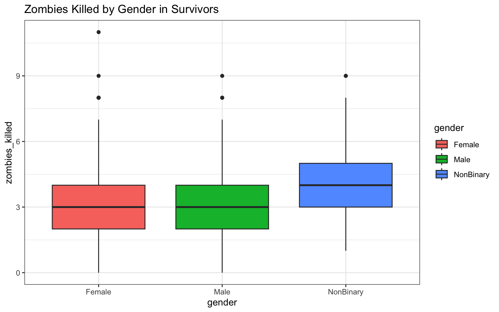
> p <- ggplot(data = z, aes(x = gender, y = years_of_education)) + geom_boxplot(aes(fill = gender)) +
+ ggtitle("Years of Education by Gender in Survivors") + theme_bw()
> p
> p <- ggplot(data = z, aes(x = gender, y = age)) + geom_boxplot(aes(fill = gender)) +
+ ggtitle("Age by Gender in Survivors") + theme_bw()
> pNow, as with the previous example, there are ways to simplify our work so that we don’t have to write a separate line of code for each figure. Remembering the value of looping to save time, I leaned on the package {ggloop} to run all my plots at once. I would not expect you to be able to figure this out on your own, but I thought it might be nice to show you (may come in handy later!):
> library(ggloop)
> # Here I use piping to select the names of only those columns in 'z' that
> # have numeric entries (plus the 'gender' column)
> traits <- z %>%
+ select(gender, height, weight, zombies_killed, years_of_education, age)
>
> # Below is the code for using the {ggloop} package to make all the plots
> # at once. Can you see how the syntax for this package differs from
> # regular {ggplot2}?
> genplots <- ggloop(traits, aes_loop(x = gender, y = height:age))
> genplots[1:5] <- genplots[1:5] %L+% geom_boxplot(aes(fill = gender)) %L+% theme_bw()
> genplots## $x.gender_y.height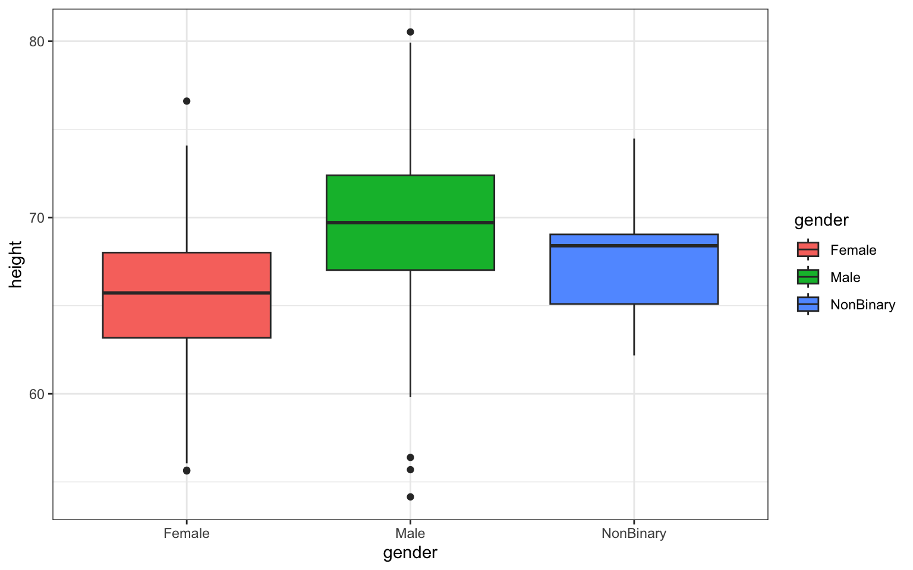
##
## $x.gender_y.weight##
## $x.gender_y.zombies_killed##
## $x.gender_y.years_of_education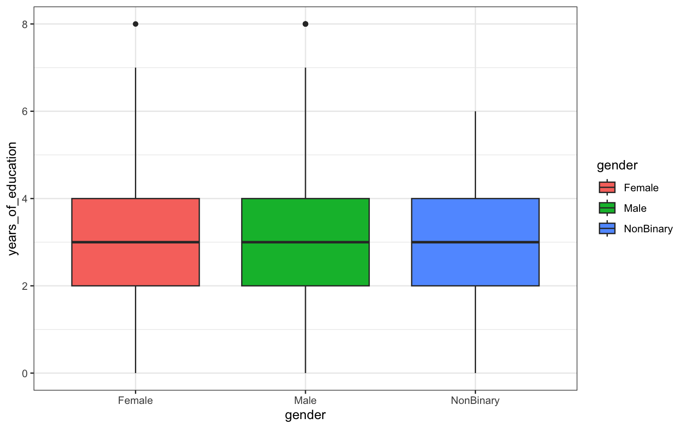
##
## $x.gender_y.age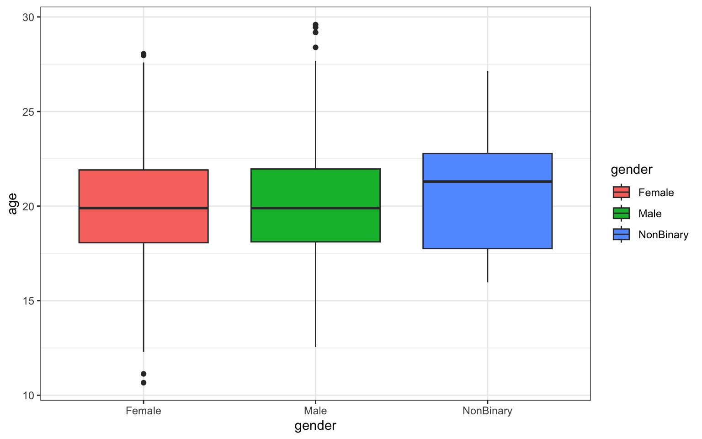
##
## attr(,"class")
## [1] "gglist"Question 3
- Use {ggplot} to make scatterplots of height and weight in relation to age. Do these variables seem to be related? In what way?
The easiest way to make a scatterplot from these data, given that
we’ve already made a boxplot, is to simply copy and paste our boxplot
code and 1) swap out our variables, and 2) change our
geom_boxplot for the geom for a scatterplot,
like geom_point, and finally 3) we should also rename the
object we save the plot to, so we can keep versions of both plots in our
R space:
> haplot <- ggplot(data = z, aes(x = age, y = height))
>
> haplot <- haplot + geom_point()
>
> haplot <- haplot + ggtitle("Height by Age in Survivors")
>
> haplot <- haplot + theme_bw()
>
> haplot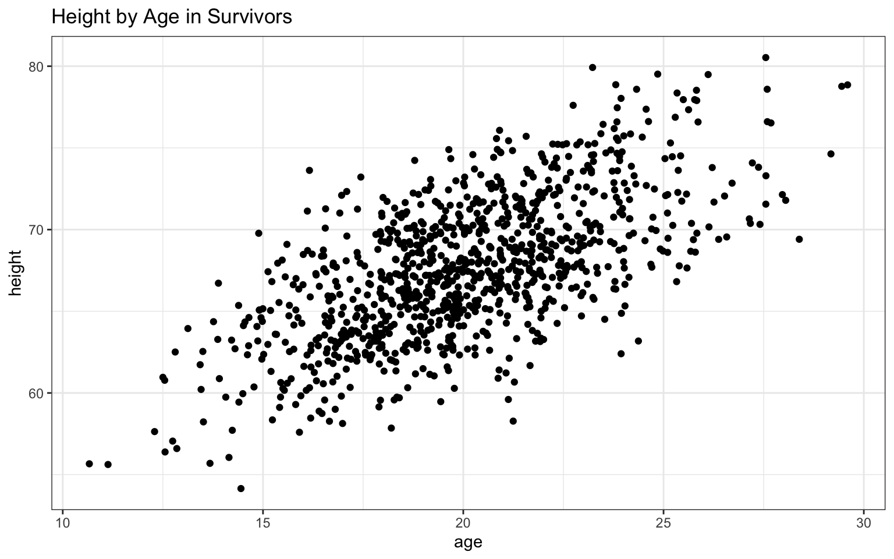
> waplot <- ggplot(data = z, aes(x = age, y = weight))
>
> waplot <- waplot + geom_point()
>
> waplot <- waplot + ggtitle("Weight by Age in Survivors")
>
> waplot <- waplot + theme_bw()
>
> waplotBased on the plots in Module 06, we can also add a trendline that really clearly illustrates the relationship between the two variables:
## `geom_smooth()` using formula = 'y ~ x'## `geom_smooth()` using formula = 'y ~ x'In this case, both variables appear to be positively related to age, with both height and, to a lesser extent, weight increasing as age increases. The addition of the regression lines really highlights these relationships, no?
Question 4
- Using histograms and Q-Q plots, check whether the quantitative variables seem to be drawn from a normal distribution. Which seem to be and which do not (hint: not all are drawn from the normal distribution)? For those that are not normal, can you determine from which common distribution they are drawn?
Let’s go back to base R plotting to look at
these all together using the par() command:
> par(mfrow = c(2, 3)) # gives us three panels in two rows
> attach(z)
> hist(height, freq = FALSE, main = "height", xlab = "height", ylab = "density",
+ ylim = c(0, 0.3))
> hist(weight, freq = FALSE, main = "weight", xlab = "weight", ylab = "density",
+ ylim = c(0, 0.3))
> hist(age, freq = FALSE, main = "age", xlab = "age", ylab = "density", ylim = c(0,
+ 0.3))
> hist(zombies_killed, freq = FALSE, main = "zombies killed", xlab = "zombies killed",
+ ylab = "density", ylim = c(0, 0.3))
> hist(years_of_education, freq = FALSE, main = "years of education", xlab = "years of education",
+ ylab = "density", ylim = c(0, 0.3))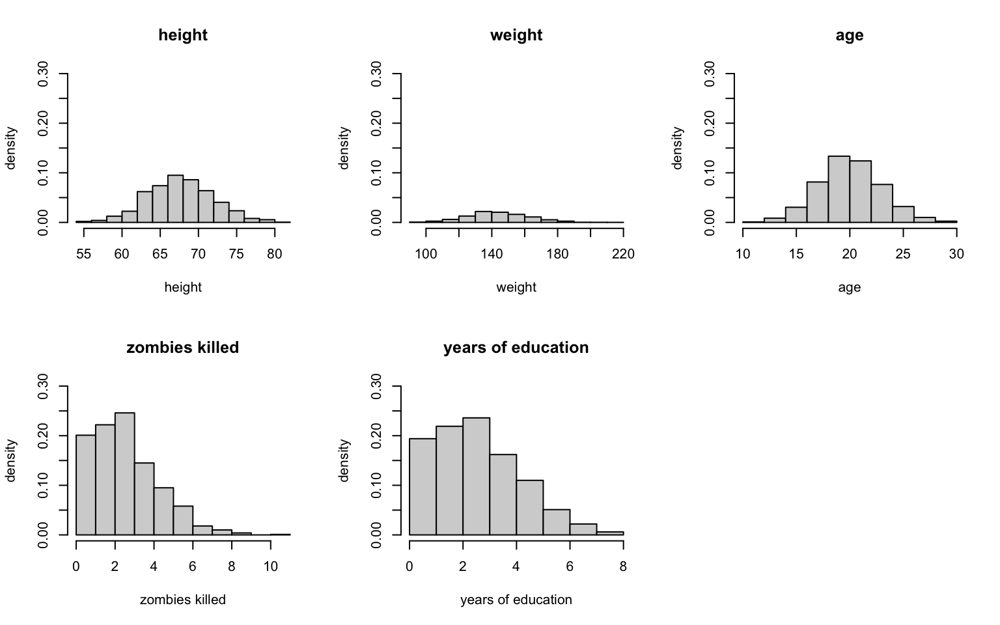
Just eye-balling it, I’d say that height and age look normal, and maybe weight (which looks a bit skewed), but zombies killed and years of education both look very non-normal (given that we would be counting the number of zombies killed and the number of years of school, I’d guess they’re probably Poisson-ish).
Let’s look at the QQ plots. We’ll use the method from earlier in Module 08:
> par(mfrow = c(2, 3)) # gives us three panels in two rows
>
> qqnorm(z$height, main = "Normal QQ plot height")
> qqline(z$height, col = "gray")
>
> qqnorm(z$weight, main = "Normal QQ plot weight")
> qqline(z$weight, col = "gray")
>
> qqnorm(z$age, main = "Normal QQ plot age")
> qqline(z$age, col = "gray")
>
> qqnorm(z$zombies_killed, main = "Normal QQ plot zombies killed")
> qqline(z$zombies_killed, col = "gray")
>
> qqnorm(z$years_of_education, main = "Normal QQ plot education")
> qqline(z$years_of_education, col = "gray")Well, weight looks ok, but sure enough it looks like zombies killed and years of education don’t easily fit a normal distribution!
Now, to assess whether these two are more Poisson-ish, we can do what we did in Homework-02 and compare these distributions to the hypothetical Poisson distribution of the data and see if they match.
Let’s experiment with zombies_killed… our x should be no
greater than the maximum number of kills (in this case, 11), and our
lambda would be roughly the average probability of a kill (or the mean).
Let’s also use par() again to make this visually easier
(and with thanks to Diego Alonso Larre for the simple code for making
the second figure):
> par(mfrow = c(1, 2)) # gives us two panels in one row
>
> hist(zombies_killed, freq = FALSE, main = "zombies killed", xlab = "zombies killed",
+ ylab = "density", ylim = c(0, 0.3), xlim = c(0, 11))
>
> hist(rpois(1000, 3), probability = T)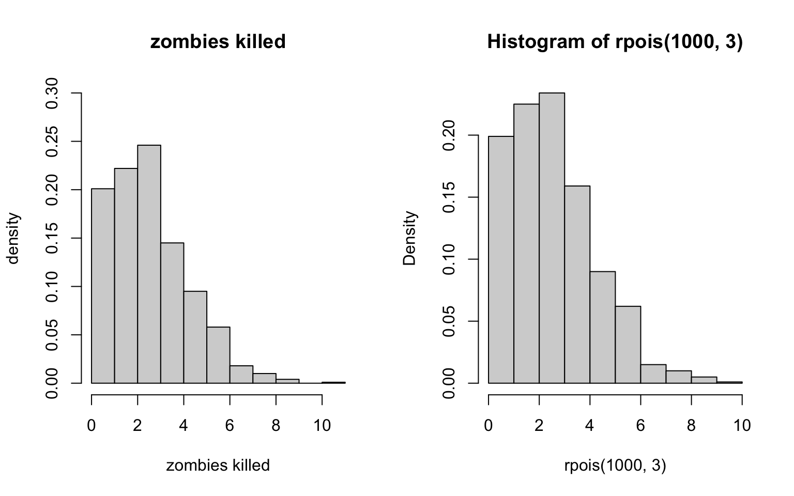
Hmmm… that doesn’t quite look right, does it? Let’s try another distribution. Maybe the Bernoulli?
To assess whether this is more Bernoulli-ish, we can do what we did
in Homework-02
and compare these distributions to the hypothetical Bernoulli
distribution of the data and see if they match. Let’s experiment… our x
should be no greater than the maximum number of kills (in this case,
11), size is 1000 (that’s how many outcomes we’ve got), and from there
we can experiment with the probability of a kill. As before, we’ll use
par() again to make this visually easier:
> par(mfrow = c(1, 2)) # gives us two panels in one row
>
> hist(zombies_killed, freq = FALSE, main = "zombies killed", xlab = "zombies killed",
+ ylab = "density", ylim = c(0, 0.3), xlim = c(0, 11))
>
> probset2 <- dbinom(x = 0:11, size = 1000, prob = 1/550)
> barplot(probset2, names.arg = 0:11, space = 0, xlab = "kills", ylab = "Pr(X=outcome)",
+ ylim = c(0, 0.3), xlim = c(0, 11))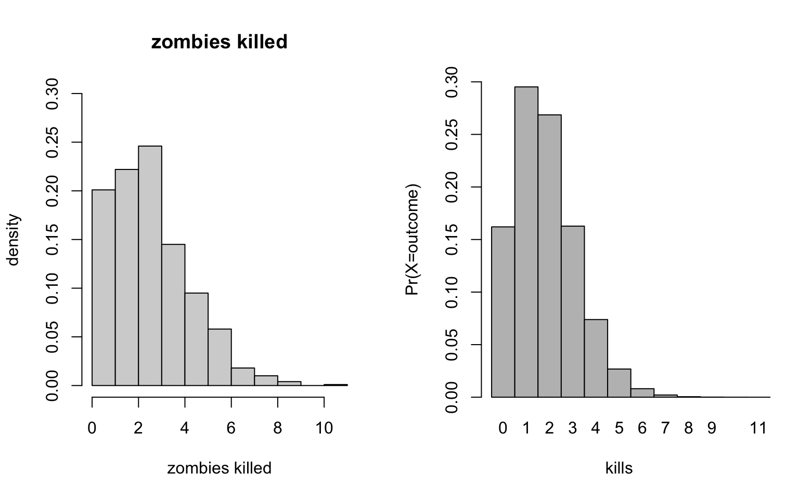
Ok… these look pretty similar to the data distributions, actually. Looks like the number of zombes killed come from our old friend the Bernoulli distribution.
Question 5
- Now use the
sample()function to sample ONE subset of 30 zombie survivors (without replacement) from this population and calculate the mean and sample standard deviation for each variable. Also estimate the standard error for each variable and construct the 95% confidence interval for each mean. Note that for the variables that are not drawn from the normal distribution, you will need to base your estimate of the CIs on some different distribution.
Code for sample() we can get from Module
08, while code for confidence intervals we can get from Module
07. Don’t forget to define se(), which isn’t in the
native R environment (you can either write
your own function, as in the module, or load the sciplot
package as a shortcut)!
> library(sciplot)
>
> # For height:
> s_height <- sample(z$height, size = 30, replace = FALSE)
> mean(s_height)## [1] 66.84465## [1] 3.665661> upper_h <- mean(s_height) + qnorm(0.975, mean = 0, sd = 1) * se(s_height)
> lower_h <- mean(s_height) + qnorm(0.025, mean = 0, sd = 1) * se(s_height)
> ci_h <- c(lower_h, upper_h)
> ci_h## [1] 65.53293 68.15636## [1] 139.0686## [1] 21.14013> upper_w <- mean(s_weight) + qnorm(0.975, mean = 0, sd = 1) * se(s_weight)
> lower_w <- mean(s_weight) + qnorm(0.025, mean = 0, sd = 1) * se(s_weight)
> ci_w <- c(lower_w, upper_w)
> ci_w## [1] 131.5038 146.6333## [1] 18.99264## [1] 2.800344> upper_a <- mean(s_age) + qnorm(0.975, mean = 0, sd = 1) * se(s_age)
> lower_a <- mean(s_age) + qnorm(0.025, mean = 0, sd = 1) * se(s_age)
> ci_a <- c(lower_a, upper_a)
> ci_a## [1] 17.99057 19.99471Now, for the non-normal samples, we can’t rely on the above code because it assumes normality and we already know these aren’t normally distributed! Here, we’ll have to use bootstrapping, as also done in Module 07:
> # For zombies_killed:
> s_zombies_killed <- sample(z$zombies_killed, size = 30, replace = FALSE)
> mean(s_zombies_killed)## [1] 2.9## [1] 1.768498> set <- NULL # sets up a dummy variable to hold our simulations
> n <- 15
> for (i in 1:10000) {
+ set[i] <- mean(sample(s_zombies_killed, n, replace = TRUE))
+ }
> quantile(set, c(0.025, 0.975))## 2.5% 97.5%
## 2.066667 3.800000> # For years_of_education:
> s_years_of_education <- sample(z$years_of_education, size = 30, replace = FALSE)
> mean(s_years_of_education)## [1] 2.366667## [1] 1.607811> set <- NULL # sets up a dummy variable to hold our simulations
> n <- 15
> for (i in 1:10000) {
+ set[i] <- mean(sample(s_years_of_education, n, replace = TRUE))
+ }
> quantile(set, c(0.025, 0.975))## 2.5% 97.5%
## 1.6 3.2Question 6
- Now draw 99 more random samples of 30 zombie survivors out and calculate the mean for each of the these samples. Together with the first sample you drew out, you now have a set of 100 means for each variable (each based on 30 observations), which constitutes a sampling distribution for each variable. What are the means and standard deviations of this distribution for each variable? How do the standard deviations compare to the standard errors estimated in the last exercise? What do these sampling distributions look like? Are they normally distributed? What about for those variables that you concluded were not originally drawn from a normal distribution?
> x_m_height <- NULL
> for (i in 1:100) {
+ x_m_height[i] <- mean(sample(z$height, 30))
+ }
>
> hist(x_m_height, probability = TRUE)
## [1] 67.65647## [1] 0.8701077> x_m_weight <- NULL
> for (i in 1:100) {
+ x_m_weight[i] <- mean(sample(z$weight, 30))
+ }
>
> hist(x_m_weight, probability = TRUE)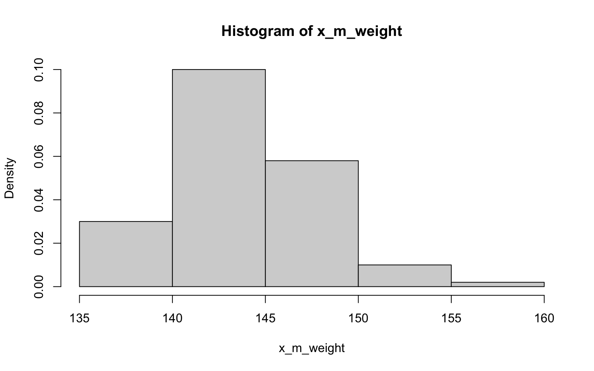
## [1] 144.0476## [1] 3.306101> x_m_age <- NULL
> for (i in 1:100) {
+ x_m_age[i] <- mean(sample(z$age, 30))
+ }
>
> hist(x_m_age, probability = TRUE)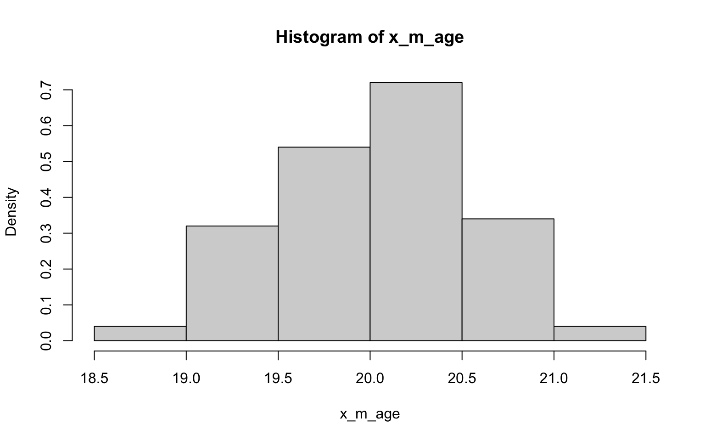
## [1] 19.98531## [1] 0.4975983> x_m_kill <- NULL
> for (i in 1:100) {
+ x_m_kill[i] <- mean(sample(z$zombies_killed, 30))
+ }
>
> hist(x_m_kill, probability = TRUE)
## [1] 2.995667## [1] 0.3141859> x_m_edu <- NULL
> for (i in 1:100) {
+ x_m_edu[i] <- mean(sample(z$years_of_education, 30))
+ }
>
> hist(x_m_edu, probability = TRUE)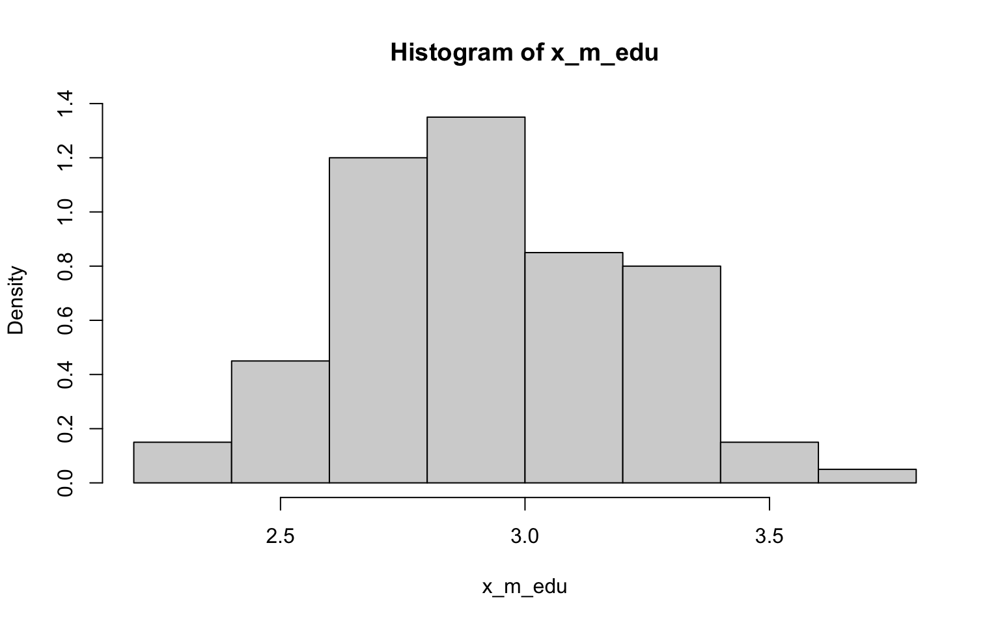
## [1] 2.981## [1] 0.2921054Well, I have to say that the histograms here all look fairly normally
distributed, including those derived from data with non-normal
distributions (ok, so they may randomly look a bit wonkier than normal)…
of course, that’s exactly what we’d expect in accordance with
the CLT (yes, this was another way to illustrating the importance of
this concept)! Also in accordance with the CLT, it looks like the SE’s
estimated in the previous exercise the SDs are not quite the same, but
are closer to each other than the SD of each as estimated in the
previous exercise.